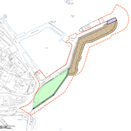

Penzance Harbour Regeneration - Option A
This is an archived page
{kind=link}
'Option A' is the proposed construction of a passenger / freight dept on Penzance Harbour, along with a new dual purpose ship capable of carrying both passengers and cargo. This will be funded with money from both the UK government and Europe, with further funding for Penzance Promenade promised. It is widely believed that 'Option A' is the most realistic way forward.
It is untrue that a majority of Battery rocks will be built over, as per the initial plans. Since then the designs of the new harbour have been re-drawn numerous times to allow for the preservation of as much of the landscape a possible, and for the passenger fright terminal to fit in with the surroundings. As it stands small portion of the rocks and shingle beach will be reclaimed.
Should we loose the sea link with the Isles of Scilly there would be a knock on effect for the businesses in the wider penzance area. The Scilly Isles are supported by many of the mainland businesses which send their goods over by sea. The Island require many daily and weekly deliveries to survive. If the sea link moves away from Penzance, regardless of which option is chosen, the Islanders will use the businesses near the new ferry location.
Tourism would take a downturn too. A recent study of the local tourist industry found that the link between Penzance and the Islands account for a third of all visitor to the wider Penzance area. Cornwall Council state that tourism accounts for 23% of all money generated in West Cornwall and supports 1 out of every 5 jobs.
Loosing the link could cause 1 out of every 15 jobs to no longer exist, along with a huge drop in the GDP of the area in general. Bare in mind that the area is already one of the poorest in the whole of Europe, and there is little opportunity for new jobs being created without major regeneration in the area.
We have outlined some resources to enable you to find out more about 'Option A' for your self, and addressed some of the misconceptions about 'Option A' in regards to Penzance's seafront. If you feel strongly either for or against the campaign you should make your voice heard.
Option A photos copyright Cornwall Council.
Sections of text from the "Future for Penzance" Facebook Group
This does not constitute endorsement from any of Purely Penzance's employees, sponsors or investors.